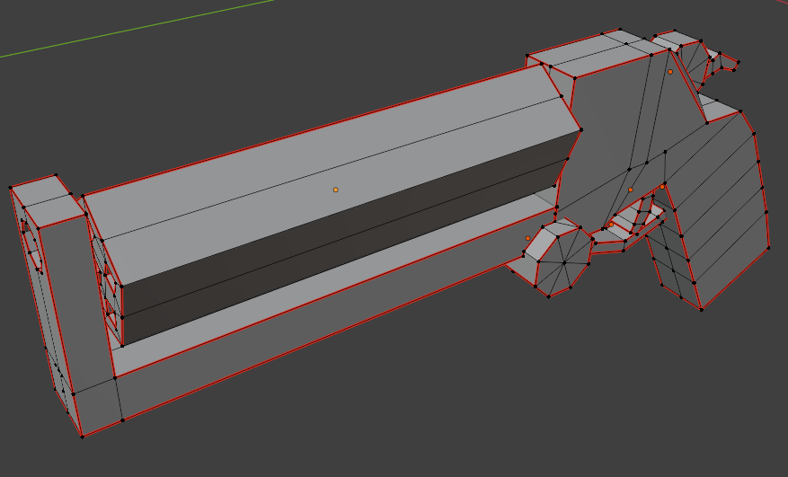
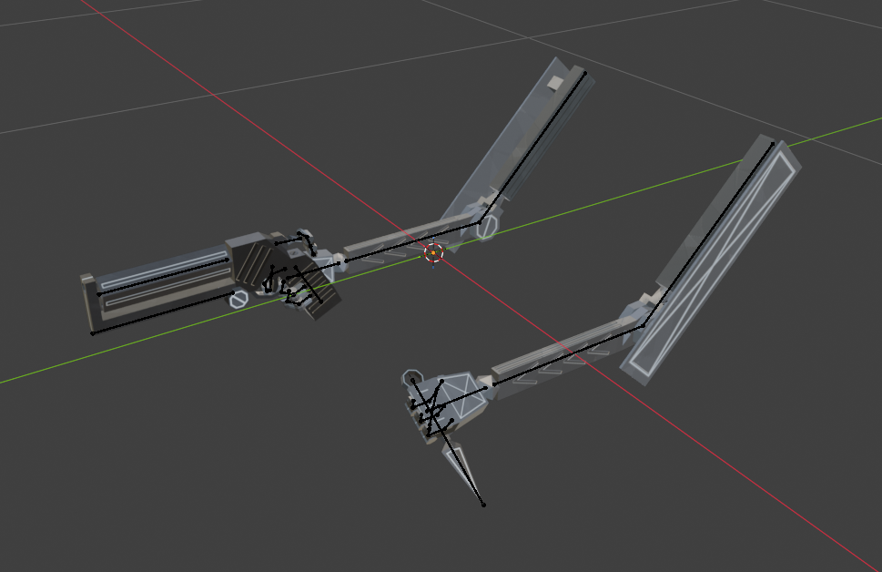
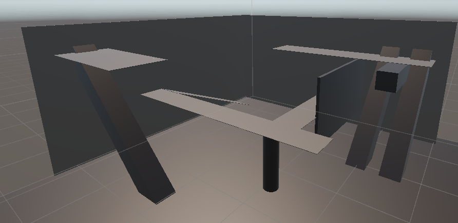

Gun Model Topology
image showing the low-poly model and topology of the Gun, with a triangle count of 604
Hiatus
A currently-in-hiatus personal project of mine exploring teleportation and movement mechanics in a first-person fps context

Personally handled all aspects, including conceptualisation, asset creation and development

image showing the low-poly model and topology of the Gun, with a triangle count of 604

The full FPS arms model and rig, with a triangle count of 3504

Level Mockup to test how movement mechanics function in an environment accurate to the conceptualised scale